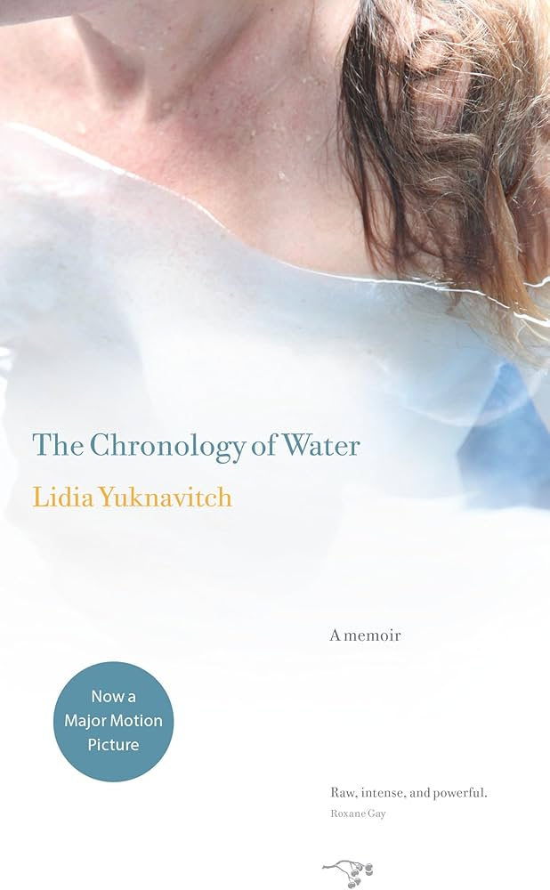

"Sometimes I think I have always been a swimmer. Everything collected in my memory curls like water around events in my life."
The Chronology of Water is Lidia Yuknavitch's memoir, following her life in a non-linear style from childhood to her 40s, chronicling her experiences with sexuality, abuse, and self-discovery. Her writing explores deeply personal topics, grappling frankly with drug and alcohol abuse, sexuality, loss, and trauma. Her prose is often challenging, and her treatment of her subject matter can be harsh and unforgiving, but it remains honest and unyielding throughout.
The Chronology of Water, as a memoir of an Oregon writer, provides us with a unique perspective on the work of literature in Oregon. While Yuknavitch expands beyond Oregon, tracing her history in California, Florida, Texas and beyond, Oregon is not merely a backdrop to her personal story. Instead, she connects her personal work in writing to her experiences in Oregon and the people she meets there. From the introduction, written by fellow Oregon writer Chelsea Cain, which describes the inception of The Chronology of Water at an Oregon writer's group led by Chuck Palahniuk, to the stories of her "writing class" with Ken Kesey, Yuknavitch's author origin story is deeply embedded in the Oregon lit scene of the late 80s and 90s. For someone attempting to understand the nature of Oregon literature and the community of Oregon authors that existed at this time, the perspective this book offers is invaluable, both as an inside perspective on that community and as a centerpiece of Oregon literature itself. There is no doubt that this is one of the best-known and most popular Oregon memoirs, certainly of the past 20 years.
As a memoir, Chronology is not merely an autobiographical relation of Yuknavitch's story, but itself an example of the kind of literature being produced in the Portland and Willamette Valley scene of the time. It is frank in its treatment of sexuality, drug and alcohol abuse, trauma, and other difficult topics. The book is structured similar to a short story collection, with each chapter free to radically shift prose styles, break continuity, change tone, or otherwise manifest itself in an entirely new way compared to the previous. Despite the constant tonal and formal shifts, the book remains quite singularly the vision and story of its author. Tied together by, as the title suggests, a thematic chronology of bodies, violence, catharsis, exploration, and yes, water, Yuknavitch weaves a web of stories unlike anything else.
It is important also to make clear how deeply connected Yuknavitch's memoir is not only to Oregon literature, but to the art form as a whole. A trained writer with a Ph.D. in English literature from the University of Oregon, Yuknavitch refers consistently to the writers that inspire and motivate her. These include not only fellow Oregon literary figureheads like Ken Kesey, but historical authors from all over the world, in particular fellow women writers like Adrienne Rich, Hélène Cixous, Emily Dickinson and Kathy Acker. In her invocation of these writers, as well as the intellectual and artistic traditions they can represent, Yuknavitch connects her work to longer, larger, and broader traditions than Oregon literature. And at the same time, as her book has only become more popular and gotten more praise since its release, she herself becomes a sort of figurehead connecting Oregon literature to these traditions. Finally, while film is not something this project as a whole touches on, I want to note that this memoir provides the basis for Kristen Stewart's debut feature length film, marking another connection between the oft-overlooked Oregon literature scene and broader artistic movements.
Chronology is important as a centerpiece of a very particular style of writing endemic to the Oregon of the 90s and 00s. Hyper-honest, self-reflexive and confrontational in its depictions of difficult subjects (abuse, drug use, sexuality, systemic repression), it is motivated by and arises from the attitudes of the Valley and Western Oregon, especially Portland and Eugene. The book received or was nominated for several awards, including the Reader's Choice Oregon Book Award, the PEN Center Creative Nonfiction Award and the Pacific Northwest Booksellers Association Award.
Born in California, Lidia Yuknavitch moved to Eugene, where she earned a Ph.D. at the University of Oregon. She is the author of 14 novels, works of short fiction, and nonfiction, including her bestselling 2010 memoir The Chronology of Water, which was adapted into a feature directed by Kristen Stewart. She has won awards for her work, including two for her 2015 novel The Small Backs of Children and three for The Chronology of Water.
Ehud Havazelet, Like Never Before (1998)
- short stories, Willamette Valley
Lidia Yuknavitch, The Small Backs of Children (2015)
- fiction, Willamette Valley
